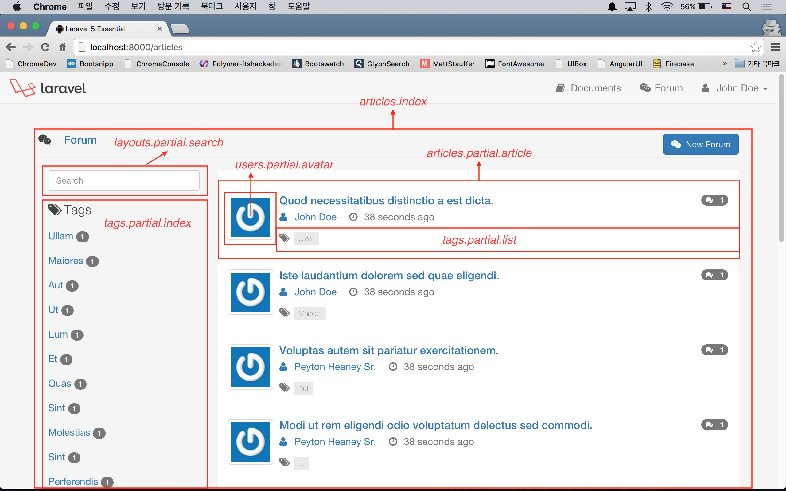
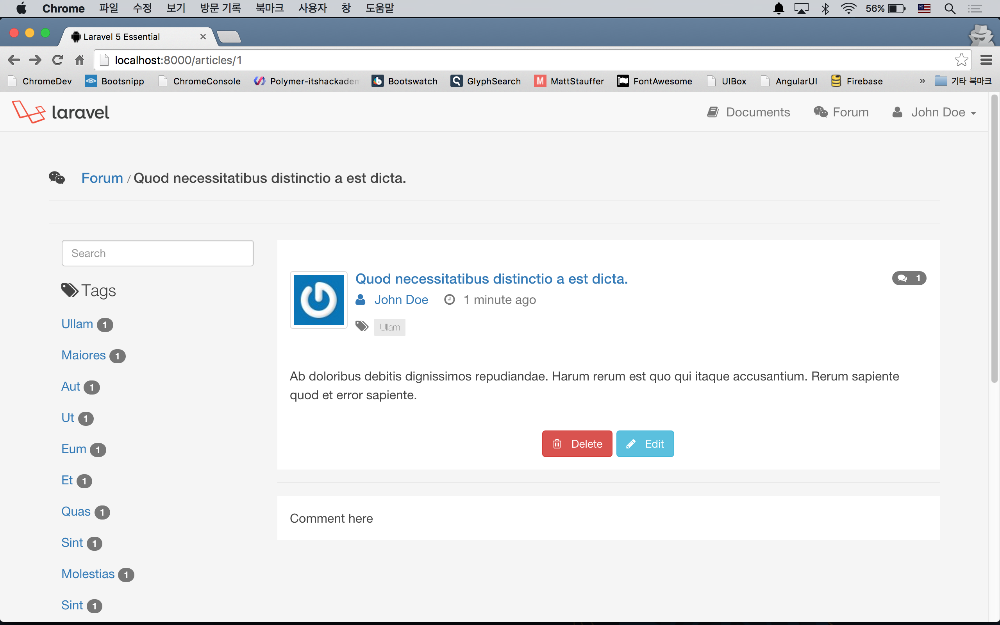
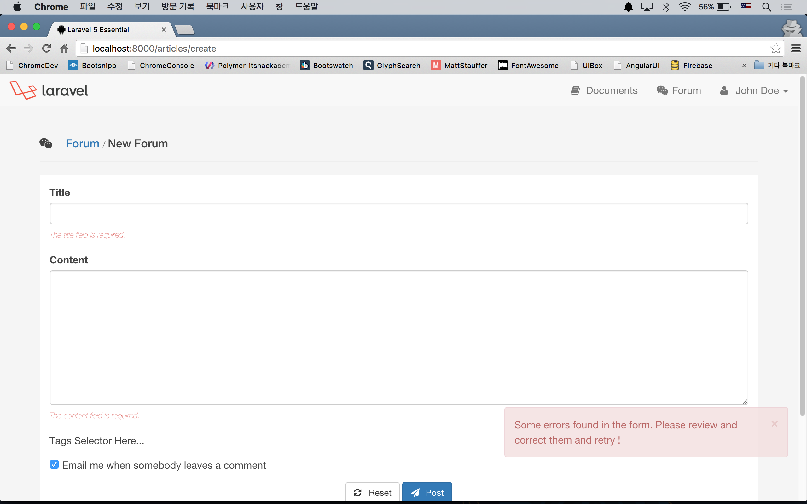
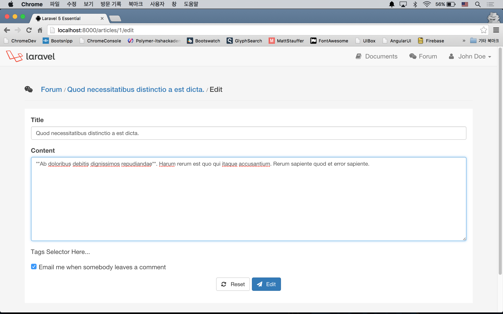

실전 프로젝트 2 - Forum
37강 - Article 기능 구현
이번 강좌를 통해 포럼의 핵심인 Article 기능을 구현할 것이다. 캐싱이나 이벤트 등은 나중에 다듬기로 하고, 컨트롤러와 뷰 위주로 작업을 해 보자.
Route 정의 및 컨트롤러 생성
RESTful 리소스 컨트롤러를 이용한다.
// app/Http/routes.php
Route::resource('articles', 'ArticlesController');$ php artisan make:controller ArticlesController --resource
$ php artisan route:listindex()와 show() 메소드, 즉 포럼 목록 보기와 개별 포럼 상세 보기만 guest 에게 허용할 것이다. 그리고, 사이드바에 모든 태그 목록을 뿌리기 위해, 35강 - 다국어 지원에서 했던 것 처럼, $allTags 란 변수를 포럼을 위한 모든 뷰에 공유할 것이다.
class ArticlesController extends Controller
{
public function __construct()
{
$this->middleware('auth', ['except' => ['index', 'show']]);
view()->share('allTags', \App\Tag::with('articles')->get());
parent::__construct();
}
}목록 보기 구현
완성된 모양을 먼저 보자.

resources/views/articles/index.blade.php 는 포럼 목록을 보여주는 뷰이다. 크게 보면 Tag 를 보여주는 왼쪽 영역과, 목록을 보여주는 오른쪽 영역으로 구분된다. 왼쪽 영역에서는 검색 폼 (layouts/partial/search.blade.php) 과 전체 태그 목록(tags/partial/index.blade.php)을 블레이드 문법으로 @include 하고 있다. 오른쪽은 포럼 엔트리들을 표시하는데, 각 엔트리(articles/partial/article.blade.php)는 사용자의 Gravatar (users/partial/avatar.blade.php)를 보여주는 영역과 각 Article과 연결된 태그의 목록(tags/partial/list.blade.php)을 보여주는 영역으로 구성되어 있다.
ArticleController::index() 메소드를 작성하자. Eager Loding 으로 'comments', 'author', 'tags' 관계를 포함하고, paginate() 메소드로 한번에 10개의 Article 인스턴스를 불러오도록 하였다.
use App\Article;
class ArticlesController extends Controller
{
public function index()
{
$articles = Article::with('comments', 'author', 'tags')->latest()->paginate(10);
return view('articles.index', compact('articles'));
}
}위에 나열한 뷰들을 작성하자. 레이아웃 관련된 내용들은 각자 입맛에 맞게 작성하도록 하자.
<!-- resources/views/articles/index.blade.php -->
@extends('layouts.master')
@section('content')
<div class="page-header">
...
</div>
<div class="row container__forum">
<div class="col-md-3 sidebar__forum">
<aside>
@include('layouts.partial.search')
@include('tags.partial.index')
</aside>
</div>
<div class="col-md-9">
<article>
@forelse($articles as $article)
@include('articles.partial.article', ['article' => $article])
@empty
<p class="text-center text-danger">{{ trans('errors.not_found_description') }}</p>
@endforelse
<div class="text-center">
{!! $articles->appends(Request::except('page'))->render() !!}
</div>
</article>
</div>
</div>
@stop하위 뷰에 데이터를 넘겨 줄 때는, @include('articles.partial.article', ['article' => $article]) 식으로 넘긴다는 것을 익혀 두자.
{{ $articles->appends(Request::except('page'))->render() }} 는 나중에 Url 뒤에 여러 개의 쿼리스트링이 붙을 것을 대비해, 미리 appends() 메소드를 이용해서 page 쿼리를 빼고 나머지들은 모두 붙이도록 했다. 가령, GET /articles?solved=0 요청의 페이징 링크는 /articles?solved=0&page=1, /articles?solved=0&page=2 와 같은 식으로 생성된다.
<!-- resources/views/layouts/partial/search.blade.php -->
<form action="#" method="get" role="search">
<input type="text" name="q" value="{{ Input::get('q') }}" class="form-control" placeholder="Search"/>
</form>풀텍스트 검색 기능은 나중에 구현할 것이므로, 폼만 만들어 놓고 넘어가자.
<!-- resources/views/tags/partial/index.blade.php -->
<p class="lead">
{!! icon('tags') !!} Tags
</p>
<ul class="list-unstyled">
@foreach($allTags as $tag)
<li class="{{ (Route::current()->parameter('id') == $tag->id) ? 'active' : '' }}">
<a href="#">
{{ $tag->name }}
@if ($tagCount = $tag->articles->count())
<span class="badge badge-default">{{ $tagCount }}</span>
@endif
</a>
</li>
@endforeach
</ul>ArticlesController::__construct() 에서 모든 뷰에 공유한 $allTags 변수를 여기서 이용한다.
'active' 클래스를 표시하기 위해 삼항 연산자를 이용하였고, Route::current()->parameter('id') 로 현재 요청의 Route 파라미터를 얻어 왔다. 아직 Route 가 정의되지 않았으므로 이 기능은 동작하지 않는데, 곧 고칠 것이다.
$tagCount = $tag->articles->count() 로 각 Tag 에 해당하는 Article 의 갯수를 구하고, 태그 이름 옆에 숫자로 표시하였다. ArticlesController::__construct() 에서 $allTags 변수에서 Eager Loading 을 한 이유가, 여기서 N + 1 쿼리 문제를 피하기 위해서였다.
참고 태그 리스트를 포함한 왼쪽 영역은 여러 뷰에서 사용하므로, 뷰 컴포저로 구성하면 더 깔끔하다. 이 코스 수준을 넘어서는 내용으로 각자 공부해서 적용해 보자.
<!-- resources/views/articles/partial/article.blade.php -->
<div class="media">
@include('users.partial.avatar', ['user' => $article->author])
<div class="media-body">
<h4 class="media-heading">
<a href="{{ route('articles.show', $article->id) }}">
{{ $article->title }}
@if ($commentCount = $article->comments->count())
<span class="badge pull-right">
{!! icon('comments') !!} {{ $commentCount }}
</span>
@endif
@if ($article->solution_id)
<span class="badge pull-right">
{!! icon('check') !!} {{ trans('forum.solved') }}
</span>
@endif
</a>
</h4>
<p class="text-muted">
<a href="{{ gravatar_profile_url($article->author->email) }}" style="margin-right: 1rem;">
{!! icon('user') !!} {{ $article->author->name }}
</a>
{!! icon('clock') !!} {{ $article->created_at->diffForHumans() }}
</p>
@include('tags.partial.list', ['tags' => $article->tags])
</div>
</div>@include('users.partial.avatar', ['user' => $article->author]) 로, $user 변수를 사용자 사진을 표시할 하위 뷰에 데이터를 넘겨 준다.
$commentCount = $article->comments->count() 로, 각 Article에 연결된 Tag 의 갯수를 구하고, Article 제목 옆에 갯수를 표시하였다.
기본기 강좌에서 'created_at', 'updated_at'은 Carbon\Carbon 인스턴스라고 얘기한바 있다. $article->created_at->diffForHumans() 메소드를 쓰면 '6 hours ago' 처럼 Article 생성 시각을 표시할 수 있다.
@include('tags.partial.list', ['tags' => $article->tags]) 로, 각 Article 인스턴스에 연결된 Tag 의 목록을 넘겨 준 것을 기억해 놓자.
<!-- resources/views/users/partial/avatar.blade.php -->
@if ($user)
<a class="pull-left hidden-xs hidden-sm" href="{{ gravatar_profile_url($user->email) }}">
<img class="media-object img-thumbnail" src="{{ gravatar_url($user->email, 64) }}" alt="{{ $user->name }}">
</a>
@else
<a class="pull-left hidden-xs hidden-sm" href="{{ gravatar_profile_url('john@example.com') }}">
<img class="media-object img-thumbnail" src="{{ gravatar_url('john@example.com', 64) }}" alt="Unknown User">
</a>
@endifgravatar_profile_url(), gravatar_url() Helper를 이용하여, 사용자의 프로파일 주소와 아바타를 가져왔다. 이 Helper들은 다음 섹션에서 구현할 것이다. 로그인한 사용자만 포럼을 남길 수 있게 조치했으므로, $user 변수가 없을 가능성은 없다. $user = null 인 경우를 대비해, 미리 조심해서 나쁠 것은 없다.
<!-- resources/views/tags/partial/list.blade.php -->
@if ($tags->count())
<span class="text-muted">{!! icon('tags') !!}</span>
<ul class="tags__forum">
@foreach ($tags as $tag)
<li class="label label-default">
<a href="#">{{ $tag->name }}</a> </li>
@endforeach
</ul>
@endif'articles/partial/article.blade.php' 에서 넘겨 받은 $tags 변수를 이용하여, 각 Article 에 연결된 Tag 들의 이름을 뿌려준다. 링크 href 속성에 '#'로 표시된 부분은 나중에 다시 업데이트할 것이다.
Gravatar Helper
// app/helpers.php
function gravatar_profile_url($email)
{
return sprintf("//www.gravatar.com/%s", md5($email));
}
function gravatar_url($email, $size = 72)
{
return sprintf("//www.gravatar.com/avatar/%s?s=%s", md5($email), $size);
}$ php artisan tinker
>>> gravatar_url('juwonkim@me.com');
=> "//www.gravatar.com/avatar/6a7346bbad52884566008892003fc6ac?s=72"'s' 쿼리는 가져올 아바타 이미지의 사이즈를 의미한다.
상세 보기 구현
목록에서 Article 엔트리의 제목을 누르면 'GET /articles/{id}' 로 넘어가도록 목록 보기 뷰에서 링크를 걸었다. 이 Route 에 해당하는 ArticlesController::show() 메소드를 작성하자.
class ArticlesController extends Controller
{
public function show($id)
{
$article = Article::with('comments', 'author', 'tags')->findOrFail($id);
return view('articles.show', compact('article'));
}
}앞에서 작업을 많이 했기에 'articles/show.blade.php' 는 의외로 간단하다. Article 인스턴스의 'content' 속성값을 뿌리기 위해, 이전에 만든 markdown() Helper를 이용하였다.
<!-- resources/views/articles/show.blade.php -->
@extends('layouts.master')
@section('content')
<div class="page-header">
...
</div>
<div class="row container__forum">
<div class="col-md-3 sidebar__forum">
<aside>
@include('layouts.partial.search')
@include('tags.partial.index')
</aside>
</div>
<div class="col-md-9">
<article>
@include('articles.partial.article', ['article' => $article])
<p>
{!! markdown($article->content) !!}
</p>
</article>
...
<article>
Comment here
</article>
</div>
</div>
@stop'Comment here' 라고 된 부분이 보일 것이다. 여기에 댓글 작성 폼과, 그간 작성된 댓글 목록이 표시될 것이다.

포럼 쓰기 구현
쓰기 UI 구현
새 포럼 글을 쓰는 UI는 목록 보기 뷰나 상단의 네비게이션 메뉴에 위치하면 적절할 것 같다.
<!-- resources/views/articles/index.blade.php -->
<div class="page-header">
<a class="btn btn-primary pull-right" href="{{ route('articles.create') }}">
{!! icon('forum') !!} {{ trans('forum.create') }}
</a>
...
</div>
...쓰기 폼 구현
포럼을 쓰기 위한 폼을 만들자.
// app/Http/Controllers/ArticlesController
public function create()
{
$article = new Article;
return view('articles.create', compact('article'));
}$article = new Article; 부분은 create 와 edit 뷰에서 폼을 공용으로 사용하기 위한 편법이다. 뒤에 나오는 공용 폼에서 <input type="text" ... value="{{ old('title', $article->title) }}"/> 에서 edit 뷰에서는 Article 인스턴스가 바인딩되지만, create 뷰에는 바인딩되지 않기 때문에 'Undefined variable: article' 에러가 난다. old() Helper 에서 세션에 $title 값이 있으면 쓰고, 없으면 $article->title로 폴백하라는 의미이다.
<!-- resources/articles/create.blade.php -->
@extends('layouts.master')
@section('content')
<div class="page-header">
...
</div>
<div class="container__forum">
<form action="{{ route('articles.store') }}" method="POST" role="form" class="form__forum">
{!! csrf_field() !!}
@include('articles.partial.form')
<div class="form-group">
<p class="text-center">
<a href="{{ route('articles.create') }}" class="btn btn-default">
{!! icon('reset') !!} Reset
</a>
<button type="submit" class="btn btn-primary my-submit">
{!! icon('plane') !!} Post
</button>
</p>
</div>
</form>
</div>
@stop@include('articles.partial.form') 은 포럼 수정하기에서도 동일하게 사용되는 폼이므로 하위 뷰로 뺐다.
<!-- resources/articles/partial/form.blade.php -->
<div class="form-group">
<label for="title">{{ trans('forum.title') }}</label>
<input type="text" name="title" id="title" class="form-control" value="{{ old('title', $article->title) }}"/>
{!! $errors->first('title', '<span class="form-error">:message</span>') !!}
</div>
<div class="form-group">
<label for="content">{{ trans('forum.content') }}</label>
<textarea name="content" class="form-control" rows="10">{{ old('content', $article->content) }}</textarea>
{!! $errors->first('content', '<span class="form-error">:message</span>') !!}
</div>
<div class="form-group">
@include('articles.partial.tagselector')
</div>
<div class="form-group">
<div class="checkbox">
<label>
<input type="checkbox" name="notification" checked="{{ $article->notification ?: 'checked' }}">
{{ trans('forum.notification') }}
</label>
</div>
</div>@include('articles.partial.tagselector'), 나중에 포럼을 작성/수정할 때 태그를 선택하는 UI를 추가할 것이다. 여유가 된다면, 'content' 필드에 쓴 내용을 마크다운으로 미리보기하는 기능도 추가해 볼 것이다.

저장 로직 구현
기본기 강좌의 23강 - 입력 값 유효성 검사에서는 다루지 않았는데, 여기서는 Form Request 를 사용하여 사용자의 입력값 유효성 검사를 할 것이다.
$ php artisan make:request ArticlesRequest// app/Http/Requests/ArticlesRequest.php
class ArticlesRequest extends Request
{
public function authorize()
{
return true;
}
public function rules()
{
return [
'title' => 'required',
'content' => 'required',
];
}
}authorize() 메소드에서 false 를 반환하면, 403 Forbidden 응답이 떨어진다. 우선은 true를 반환하자.
rules() 메소드에서 각 필드별로 검사할 규칙을 정의한다. 여기서는 'required' 만 이용했다.
// app/Http/Controllers/ArticlesController.php
use App\Http\Requests\ArticlesRequest;
class ArticlesController extends Controller
{
public function store(ArticlesRequest $request)
{
$article = Article::create($request->all());
flash()->success(trans('forum.created'));
return redirect(route('articles.index'));
}
}store() 메소드에 원래 있던 Illuminate\Http\Request 대신, 방금 만든 App\Http\Requests\ArticlesRequest 을 주입했다. 우리가 만든 Form Request는 원래있던 Request 객체를 상속하고 있고, 거기다 유효성 검사 기능을 추가한 것이다. Form Request 는 미들웨어와 유사한 기능을 하고 있는데, 우리가 만든 Form Request를 통과하지 못하면, store() 메소드는 전혀 실행되지 않는다.
flash() 메소드는 32강 - 사용자 로그인 에서 설치한 'laracasts/flash' 패키지에 포함된 Helper로, success(), error() 등에 메소드를 체인해서 사용할 수 있다.
Tag UI 가 준비되면, 유효성 검사 로직과 저장 로직을 다시 손 볼 것이다.
포럼 수정 구현
수정 UI 구현
수정 및 삭제 UI는 주로 목록 보기 또는 상세 보기에서 접근할 수 있다. 여기서는 상세 보기 뷰에서 구현한다.
<!-- resources/articles/show.blade.php -->
<article>
...
<p class="text-center">
<a href="{{route('articles.edit', $article->id)}}" class="btn btn-info">
{!! icon('pencil') !!} Edit
</a>
</p>
</article>수정 폼 구현
쓰기 폼에서 공용 폼을 만들었기에 한결 간편해 졌다.
// app/Http/Controllers/ArticlesController.php
public function edit($id)
{
$article = Article::findOrFail($id);
return view('articles.edit', compact('article'));
}<!-- resources/articles/edit.blade.php -->
@extends('layouts.master')
@section('content')
<div class="page-header">
...
</div>
<div class="container__forum">
<form action="{{ route('articles.update', $article->id) }}" method="POST" role="form" class="form__forum">
{!! csrf_field() !!}
{!! method_field('PUT') !!}
@include('articles.partial.form')
<div class="form-group">
<p class="text-center">
<a href="{{ route('articles.edit', $article->id) }}" class="btn btn-default">
{!! icon('reset') !!} Reset
</a>
<button type="submit" class="btn btn-primary">
{!! icon('plane') !!} Edit
</button>
</p>
</div>
</form>
</div>
@stop{!! method_field('PUT') !!} 는 13강 - RESTful 리소스 컨트롤러 에서 설명한 메소드 오버라이드를 위한 숨김 필드를 생성해 주는 Helper 로, <input type="hidden" name="_method" value="PUT"> 태그를 생성한다.
수정 로직 구현
포럼 쓰기에서 만든 FormRequest를 그대로 사용하자.
// app/Http/Controllers/ArticlesController.php
public function update(ArticlesRequest $request, $id)
{
$article = Article::findOrFail($id);
$article->update($request->except('_token', '_method'));
flash()->success(trans('forum.updated'));
return redirect(route('articles.index'));
}
포럼 삭제 구현
삭제 UI 구현
일반적으로 삭제는 Ajax 요청을 이용하는데, 여기서는 전통적인 폼 요청을 통해서 하도록 하자.
<!-- resources/articles/show.blade.php -->
...
<div class="text-center">
<form action="{{ route('articles.destroy', $article->id) }}" method="post">
{!! csrf_field() !!}
{!! method_field('DELETE') !!}
<button type="submit" class="btn btn-danger">
{!! icon('delete') !!} Delete
</button>
<a href="{{route('articles.edit', $article->id)}}" class="btn btn-info">
{!! icon('pencil') !!} Edit
</a>
</form>
</div>
</article>삭제 로직 구현
// app/Http/Controllers/ArticlesController.php
public function destroy($id)
{
Article::findOrFail($id)->delete();
flash()->success(trans('forum.deleted'));
return redirect(route('articles.index'));
}접근 제어 (Authorization)
상세 보기에서 관리자이거나 사용자 자신이 작성한 포럼만 수정하거나 삭제할 수 있도록 할 것이다. 34강 - 사용자 역할 에서 설치한 'bican/roles' 패키지가 밥값을 할 차례이다... 라고 생각하고, 이용하려고 했으나 뭔가 여의치 않다.
해서 User 와 Article 모델에 Helper 메소드를 만들었다. 어쨌든, 뷰에서 접근을 제한하여 버튼 UI 자체가 표시되지 않게 하는 게 우선이고...
// app/User.php
public function isAdmin()
{
return $this->roles()->whereSlug('admin')->exists();
}// app/Article.php
public function isAuthor()
{
return $this->author->id == auth()->user()->id;
}<!-- resources/articles/show.blade.php -->
@if (auth()->user()->isAdmin() or $article->isAuthor())
<div class="text-center">
<form ...>
<button ...>Delete</button>
</form>
<a ...>Edit</a>
@endif
</article>다음은 CURL 코맨드 등을 이용하여 직접 Route 에 접근하는 것을 막아야 한다. 이를 위해 Route 미들웨어를 만들고, app/Http/Kernel.php 에 Route 미들웨어라고 등록할 것이다.
$ php artisan make:middleware CanAccessArticle// app/Http/Middleware/CanAccessArticle.php
class CanAccessArticle
{
public function handle($request, Closure $next)
{
$user = $request->user();
$articleId = $request->route('articles');
if (! \App\Article::whereId($articleId)->whereAuthorId($user->id)->exists() and ! $user->isAdmin()) {
flash()->error(trans('errors.forbidden') . ' : ' . trans('errors.forbidden_description'));
return back();
}
return $next($request);
}
}Illuminate\Http\Request 인스턴스에서는 user() 메소드를 사용할 수 있으며, auth()->user() 와 동일한 결과를 얻을 수있다. 로그인한 사용자 id와 Route 파라미터로 넘겨 받은 Article id로 Article 모델을 검색하여 레코드가 있으면, 작성자이므로 통과시켜 주는 식이다.
참고 미들웨어에서 Route를 통해 사용자로부터 넘겨 받은 파라미터를 이용할 수 있다. 미들웨어 파라미터를 잘 이용하면, Article 모델 뿐 아니라 여러 모델에 적용할 수 있는 미들웨어를 만들수 있을 것이다.
// app/Http/Kernel.php
protected $routeMiddleware = [
// Other Route Middlewares ...
'accessible' => \App\Http\Middleware\CanAccessArticle::class,
];컨트롤러에서 미들웨어를 등록하자. 미들웨어는 순차적으로 실행되므로 반드시 'auth' 미들웨어 다음에 정의되어야 한다. 이유는 사용자 로그인을 먼저 걸러주고 난 이후에, 이 사용자가 해당 Route와 컨트롤러 메소드에 접근할 수 있는 지 체크하는 식이다.
// app/Http/Controllers/ArticlesController.php
public function __construct()
{
...
$this->middleware('accessible', ['except' => ['index', 'show', 'create']]);
}테스트
artisan CLI의 tinker 코맨드로 사용자의 비밀번호를 수정하자.
$ php artisan tinker
>>> $user = App\User::find(2);
>>> $user->password = bcrypt('password');
>>> $user->save();1번과 2번 사용자로 번갈아 로그인한 후 구현한 내용이 잘 동작하는 지 확인해 보자.